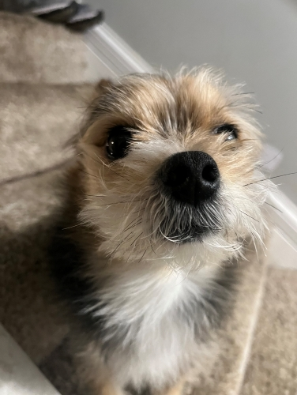
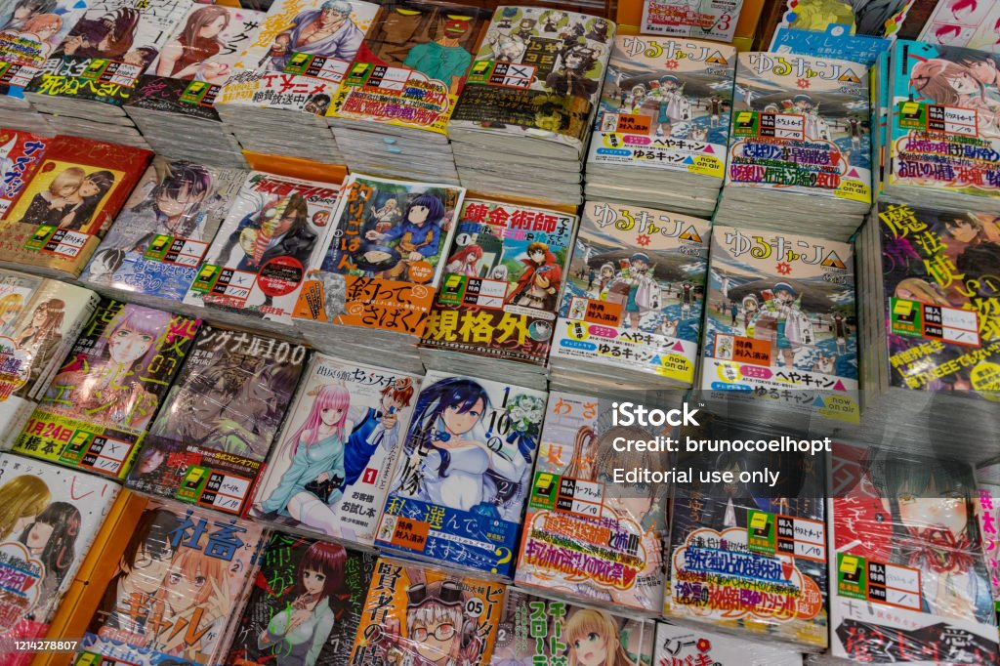

My name is Cincere, and I've always been interested in programming. What really got me into it was a game called Roblox. You've most likely heard of it; it's a really popular game with hundreds of millions of active players. I wanted to become a Roblox developer and release my own game, but I started with zero knowledge of how anything worked when it came to scripting, modeling, animations, and more. So, I did what anyone would do: I looked up some tutorials on YouTube, which honestly didn't help much. Eventually, I gave up, but to sum it up, I've actually gotten back into it over the summer. I'd still like to put something out there because I have lots of ideas that I feel could do well. I'm currently developing a Dragon Ball-inspired fighting game.
My favorite exercises
- Lat pulldown
- Planks
- Pull ups
Programming languages i know/am learning
- Java
- Html/CSS
- Lua
- C++ (very new to C++ i've only went over the basics with it)
- Javscript
Besides programming other things i enjoy would be gaming, playing with my dog, and exercising. My dogs name is Marlo, he's a yorkie and he's around 6 years old we've had him since 2020 when he was a little baby and here's a picture of him.

- Marlo
- Birthday:
- Janruary 21st, 2020
- Favorite foods:
- Anything infront of him.
Some video games I enjoy playing are Roblox, Marvel Rivals, and Overwatch. Out of all of them, I play Roblox the most, although I haven't been playing it as much lately. I can't really think of a specific game on Roblox that I particularly enjoy playing right now. Recently, I've also been watching some great movies and shows, such as Breaking Bad, Moonlight, Moon Knight, Demolition, Interstellar, and many more. Besides that, I enjoy watching anime, and I really want to get into reading manga. One manga I've started reading is Vagabond, but I also want to check out a series called BLAME! It seems really interesting, as I recently watched a video about it, and the artwork looks really good, too.

Favorite anime/manga
- Dragon Ball z
- Chainsaw Man
- Vagabond